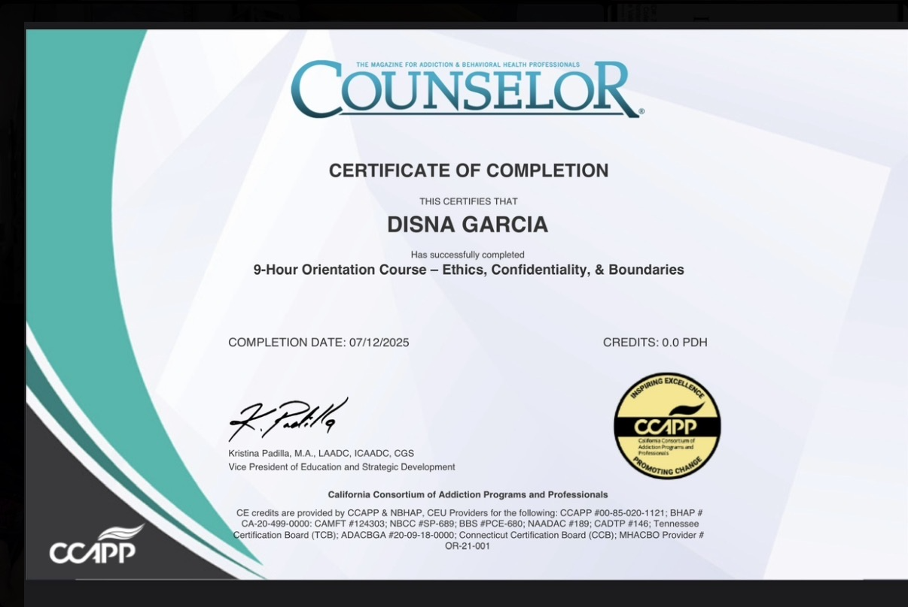
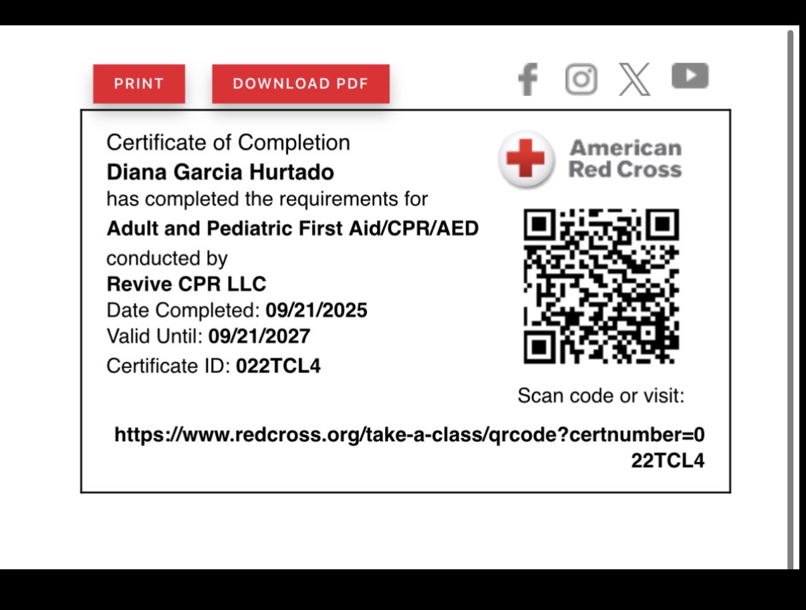
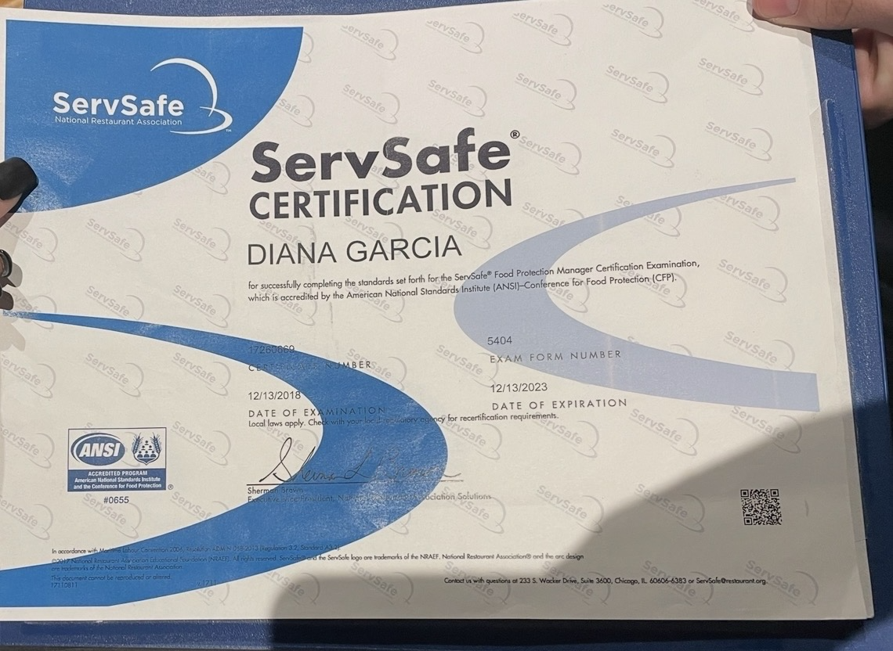

My current profession is in the shipping and warehouse industry, where I have developed valuable skills in organization, time management, problem-solving, attention to detail, and teamwork. Working in this environment has taught me the importance of accountability, consistency, and maintaining a strong work ethic. Although my current profession is outside the field I ultimately aspire to pursue, I recognize that the skills I have developed are transferable to virtually any professional setting. I take pride in being dependable, adaptable, and committed to producing quality work. I believe every position I have held has contributed to my personal and professional development.
Academically, I am currently a junior at the University of California, Riverside, pursuing a Bachelor of Arts in Psychology. My educational journey is particularly meaningful because psychology is more than just an academic interest to me; it is a field that aligns with my personal values and the kind of impact I hope to make in the world. Throughout my coursework, I have developed a deeper understanding of human behavior, cognitive processes, emotional development, mental health, and the environmental factors that influence an individual’s life experiences. I am especially interested in understanding how childhood experiences, trauma, and social environments can shape an individual’s behavior and development.
My long-term educational goal is to pursue graduate studies in psychology and establish a career working with children and adolescents, particularly those who face developmental, behavioral, or emotional challenges. I am passionate about helping young individuals recognize their potential, develop healthy coping mechanisms, and build the skills necessary to navigate life’s challenges. I believe early intervention, positive guidance, and access to appropriate mental health resources can significantly influence the direction of a person’s life.
My interest in this field is also rooted in my personal experiences and the understanding that individuals do not always have access to the support, guidance, or resources they need during critical stages of their development. This perspective has strengthened my desire to become someone who can provide that support to others. I believe that behind every behavior is an experience, and taking the time to understand an individual’s circumstances is essential to helping them grow.
I consider myself a resilient, compassionate, and determined individual who values continuous learning and personal growth. Balancing professional responsibilities with higher education has taught me discipline, perseverance, and the importance of remaining focused on long-term goals. I understand that building a career in psychology requires dedication, education, and a genuine commitment to serving others, and I am prepared to put in that work.
Ultimately, I want my professional career to reflect more than personal success. I want to use my education, life experiences, and understanding of human behavior to make a meaningful difference in the lives of children and families. My goal is to contribute to a future where young individuals feel understood, supported, and empowered to create a better direction for their lives.
Enter bio here
Enter bio here
• Ran sessions to help students learn how to code
• Reviewed and graded student coding projects
• Gained basic knowledge in Psychology


